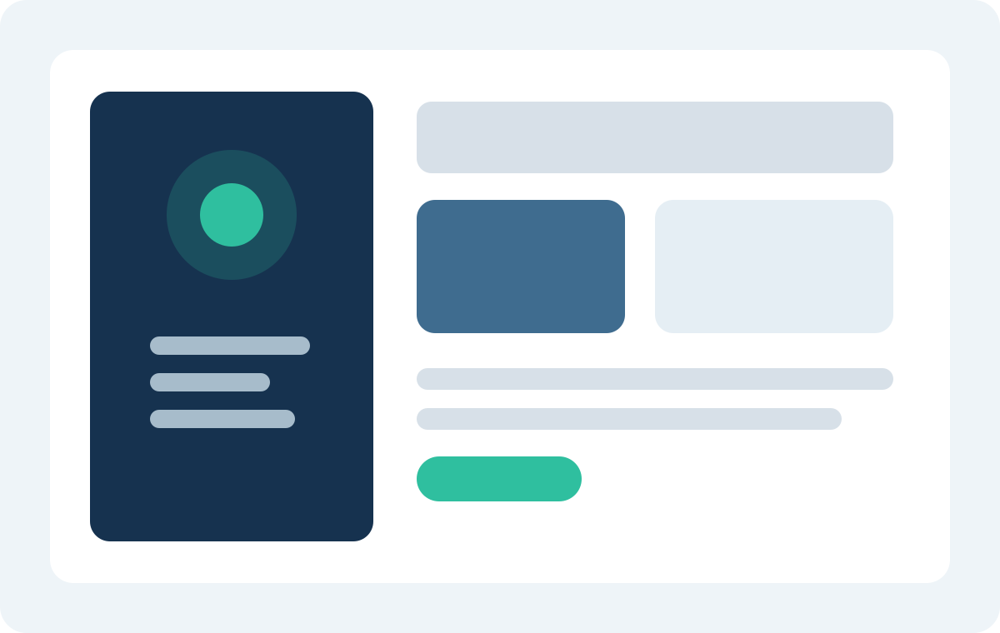

01
業務可視化・改善構想策定
ヒアリング、業務資料、処理時間をもとに、ボトルネックと改善優先度を可視化。経営層向けの判断材料まで整理します。
中堅企業向け 業務設計・定着支援
アクシス業務デザインは、部門横断で複雑化した業務を整理し、標準化、BPO設計、DX定着まで一気通貫で支援します。意思決定しやすい設計資料と、実際に運用が回る仕組みづくりの両方を提供します。

支援社数
120社超平均伴走期間
6.8か月主要領域
受発注 / BPO / DX定着情報管理
ISMS準拠運用Service Overview
改善の打ち手を整理し、運用設計、役割分担、定着指標まで明確にします。
01
ヒアリング、業務資料、処理時間をもとに、ボトルネックと改善優先度を可視化。経営層向けの判断材料まで整理します。
02
社内継続運用でも外部移管でも使えるよう、責任分界、標準手順、監査ポイントを整えます。
03
導入済みツールが使われない状況を改善し、入力ルール、権限設計、レビュー体制まで設計します。
Why Axis
忙しい現場に無理を強いないために、最初の設計段階で「何を変えるか」「何は後回しにするか」を線引きします。
提案担当だけでなく運用設計担当が初期フェーズから参加し、実装上の無理を防ぎます。
通常フローだけでなく、止まりやすい例外条件や引継ぎルールまで整理します。
工数削減だけでなく、入力率、滞留率、問い合わせ件数などの運用指標も先に定義します。
Featured Case

物流商社 / 受発注再設計
営業、物流、管理部門で分断されていた手配フローを統合。例外処理ルールと承認導線を整理し、二重入力と確認待ちを削減しました。